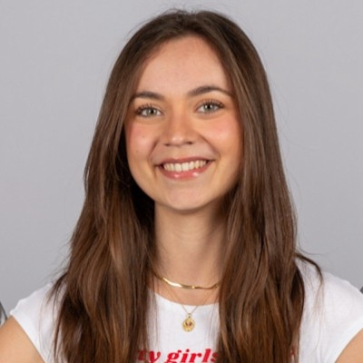

Hi, I'm Maria Pau ;)
Biotechnologist & Bioinformatician student
I am a biotechnologist trained at Universitat de Lleida, with hands-on experience in molecular biology and microbiology. Currently, I am pursuing my Master's at UPF & UB in Bioinformatics for Health Sciences.
My professional curiosity lies at the intersection of structural biology and physics. I have built a technical profile tailored for supercomputing environments, specializing in predictive modeling and data manipulation.
Current Project: Developing a ligand binding site predictor for proteins using Python.
🐍
Languages & Data
🧬
Structural Biology
💻
Workflow & HPC
Featured Projects
A showcase of my latest work and experiments.